오라클 데이터베이스를 이용한 JDBC 실습을 위하여,
오라클 데이터베이스에서 테이블을 생성합니다.
JSP와 데이터베이스의 정보를 연동하여 사이트에 정보를 표시하기 위한 단계가 됩니다.

위는 완성된 데이터베이스 테이블입니다.
실습을 위하여 몇가지의 로그인 데이터를 준비합니다.

다음으로 jdbc 라이브러리를 다운받습니다.
위 사이트를 통해 ojdbc파일 다운로드를 클릭합니다.

이클립스를 열어서, JRE System Library의 Properties를 클릭합니다.

위 버튼을 클릭하여 창을 엽니다.

Edit 버튼을 클릭하여 수정창을 엽니다.

ADD버튼을 통해서 새로운 자바 라이브러리를 추가합니다.

추가가 완료된 후에 위의 코드로 정상적으로 오라클 데이터베이스와 연결되는지 확인합니다.
user와 password값에는 사용자 아이디와 비밀번호를 입력해줍니다.

오라클과 자바 연동을 위해서는 jdbc 드라이버와 연동을 위한 url과,
오라클 연동을 위한 localhost 포트번호와 SID값을 이용하여 연결하여야한다.

Connection 개체에 아이디와 비밀번호와 url값을 넘겨서,
오라클과 연동을 시도합니다. 실패시 try를 통해서 예외로 넘어갑니다.

Statement객체에 sql 쿼리를 위한 문장을 담고,
해당 쿼리를 데이터베이스로 행한 후에, ResultSet 객체에 담습니다.

ResultSet객체에서 하나씩 값을 꺼내며 쿼리문의 결과를 받아옵니다.

실행하여 데이터베이스에 적용한 값들이 제대로 출력되는지 확인합니다.
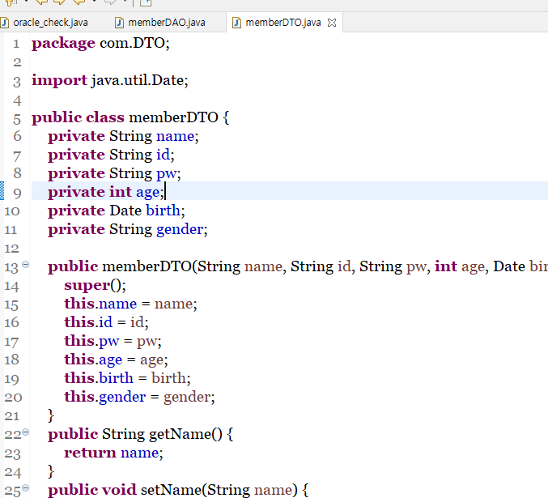
DAO와 DTO는 효율적으로 JSP와 데이터베이스간 데이터 전달을 위한 체계입니다.
먼저 DTO는 데이터베이스의 각 튜플값들을 클래스형태로 저장해두기 위한 객체를 만들어두는 것입니다.
위와같이, 각 타입을 선언하고, constructor와 getter, setter를 선언해주면 됩니다.
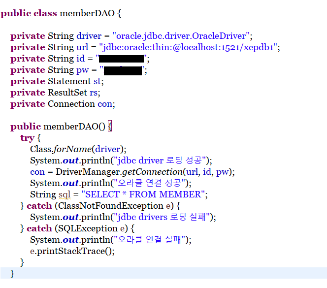
다음으로 DAO는 자바 클래스에서 데이터베이스와 교신하는 중심 클래스를 별도로 둠으로써,
보다 명료하게 데이터베이스와의 교신을 할 수 있도록 도와주는 클래스입니다.
위와같이 클래스가 정의되면 데이터베이스와 연동되도록 JDBC를 구성해줍니다.
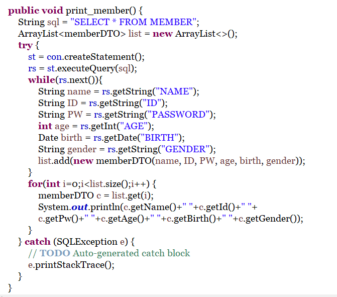
테스트를 위해서, print메소드를 선언합니다.
해당 메소드는 데이터베이스에서 값을 가져와서, 해당 값들을 로그로 출력시키는 코드입니다.
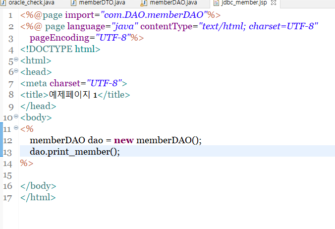
다음으로 JSP에서 해당 DAO를 선언해주고, DAO에서 선언한 메소드를 실행시켜줍니다.
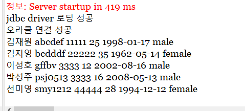
정상적으로 메소드가 실행되어서 값이 출력되는지를 확인합니다.
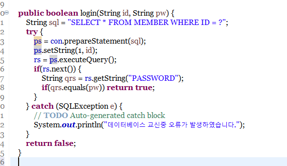
jdbc 실습 마지막으로 데이터베이스 정보를 통해서 로그인을 하는 양식을 만들어 봅니다.
먼저 이전 스텝에서 만들어놓은 DAO에서 새로운, 로그인을 위한 메소드를 작성합니다.
내용은 입력받은 id를 통해서 오라클에서 해당 아이디와 관련된 값을 가져오고,
비밀번호와 일치하면 true, 일치하지 않으면 false를 반환하는 메소드입니다.
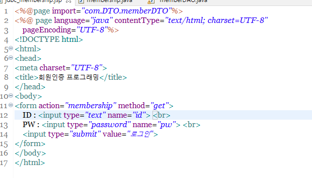
다음으로 간단한 login form 양식을 통해서 id와 pw를 입력받도록 합니다.
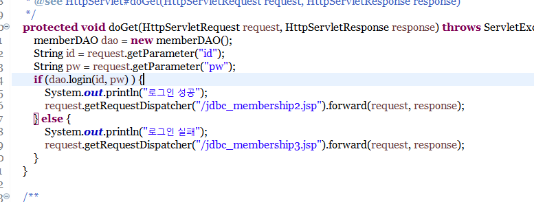
form양식을 받을 서블릿 파일을 작성합니다.
서블릿파일에서는 dao를 선언하여, login메소드에서 값을 받아오고,
해당 값이 true라면 로그인 성공을 알리는 페이지로 넘어가며,
해당값이 flase라면 로그인 실패를 알리는 페이지로 넘어가도록 합니다.
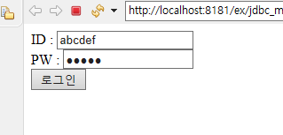
먼저 실제 데이터베이스에 있는 값을 id와 pw로 제공합니다.
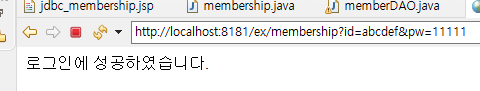
id와 pw가 일치하므로, 로그인 성공을 알리는 페이지로 넘어가게 됩니다.
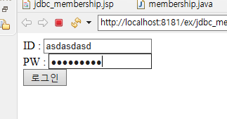
다음으로, 실제 데이터베이스에는 없는 임의의 값을 집어넣습니다.
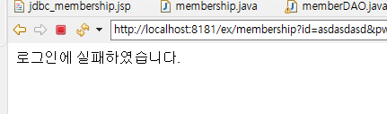
존재하지 않는 id이거나, 일치하지 않을 경우에는,
로그인 실패를 알리는 페이지로 넘어가게 됩니다.